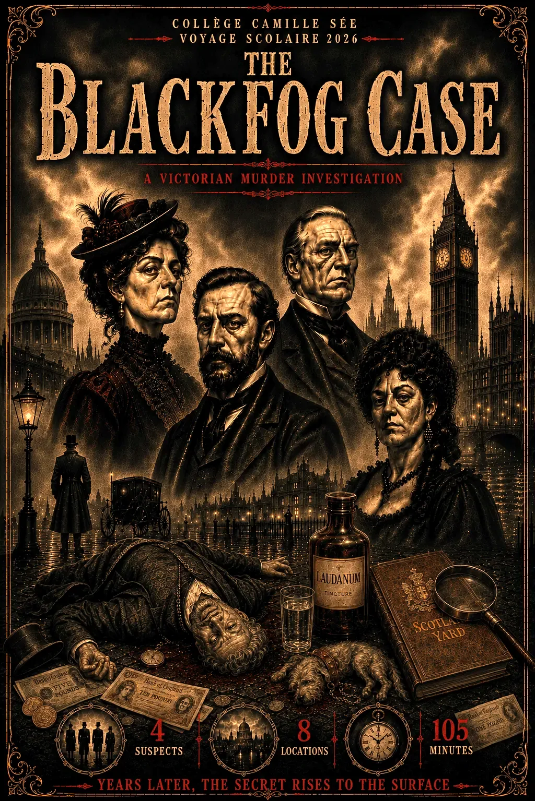

📜 Règles du jeu
Scotland Yard — Division des Enquêtes Criminelles — Londres, 1er mars 1888
THE BLACK FOG CASE
⏱ Déroulement
- Vous avez 105 minutes pour résoudre l'affaire
- Votre équipe se rend sur 4 lieux à travers Londres. Aidez-vous de vos téléphones pour vous y rendre ou demandez votre chemin
- Les Inspecteurs Lou et Luca vous donnent le code qui vous permet de révéler votre première destination et vos premiers défis
- Une fois sur place, résolvez l'énigme et réalisez le défi
- Les rôles tournent et vous recommencez
- Le dernier défi se fera à Covent Garden
👥 Les rôles — ils tournent à chaque étape
🔍
L'Inspecteur
Dirige le groupe, lit les énigmes, prend les décisions
📜
Le Greffier
Note les indices, tape les réponses
📸
L'Agent de terrain
Réalise tous les défis photo et vidéo
Sur les deux premières étapes, les rôles tournent : chaque membre en occupe un différent. Pour les deux dernières étapes, c'est à vous de décider qui fait quoi.
🇫🇷 Le joker français
Une énigme vous résiste ? Vous disposez d'un seul joker pour toute la partie : il affiche l'énigme de votre choix en français.
Réfléchissez bien avant de l'utiliser : une fois dépensé sur une énigme, il ne peut plus servir ailleurs.
🎩 Les agents de Scotland Yard
🎩
Inspecteur-Divisionnaire Lou
Scotland Yard — Brigade criminelle
Scotland Yard — Brigade criminelle
🎩
Inspecteur-Divisionnaire Luca
Scotland Yard — Brigade criminelle
Scotland Yard — Brigade criminelle
⚠ TRÈS IMPORTANT — LE TÉLÉPHONE DU JEU
- Gardez TOUJOURS le même téléphone et le même navigateur du début à la fin de la partie.
- Votre progression est sauvegardée automatiquement sur ce téléphone. Si le téléphone s'éteint (batterie...), pas de panique : rallumez-le, rouvrez le lien du jeu, tout revient.
- Ne videz JAMAIS l'historique, le cache ou les données du navigateur : vous perdriez toute votre progression.
- N'utilisez pas la navigation privée.
- Attention : le chronomètre continue de tourner même si le téléphone est éteint. Le temps réel ne s'arrête pas.
⚠ À savoir
- FAITES TRÈS ATTENTION EN TRAVERSANT
- ATTENTION À VOS SACS ET SÉCURISEZ VOS TÉLÉPHONES QUAND VOUS LES TENEZ
- DRAGONNE OBLIGATOIRE
- Deux téléphones à utiliser : un pour le jeu, l'autre pour les défis photo/vidéo. Le 3ème reste rangé en cas de problème.
- Les réponses aux énigmes sont toujours en anglais, en un seul mot
— Sélectionnez votre équipe —
Camille Sée
0/4 balises
⚖ Verdict Final — The Black Fog Case
⚖ Verdict
Qui a tué Lord Blackwood ? / Who killed Lord Blackwood?
📰 The London Herald — édition complète
All six teams brought back their fragments: the case newspaper is finally complete. Read it carefully before naming the culprit.
Les six équipes ont rapporté leurs fragments : le journal de l'enquête est enfin complet. Lisez-le attentivement avant de désigner le coupable.
Les six équipes ont rapporté leurs fragments : le journal de l'enquête est enfin complet. Lisez-le attentivement avant de désigner le coupable.
Accusez un suspect / Accuse a suspect
Study your evidence carefully before you point the finger.
👩💼
Lady Victoria Harcourt
L'héritière / The heiress
Nièce · Niece
🧪
Dr. Edmund Vane
Le médecin / The physician
Médecin · Doctor
🔑
Alfred Griggs
Le majordome / The butler
Majordome · Butler
🃏
Miss Amelia Cross
La complice / The accomplice
Associée · Associate
⚙ Game Masters
Mode Game Masters
Accès réservé aux Game Masters
Mot de passe incorrect.
⚙ Game Masters — The Black Fog Case
Comment utiliser ce tableau : Quand une équipe revient au hub, regardez la ligne correspondante. Le badge coloré à droite indique la prochaine balise. Validez leur réponse (voir clés ci-dessous), puis envoyez-les.
Mode test
Ouvre toutes les balises sans code. Utile pour répéter / présenter le jeu.
Sauvegarde
Efface la progression sauvegardée sur CE téléphone. À faire avant le jour J, ou en cas de pépin.
TABLEAU DE DISPATCH — État des équipes
🔑 CLÉ DES RÉPONSES — Réservé professeur
🔑 CODE DE DÉPART — balise 1, commun à toutes les équipes
1888
À communiquer oralement à toutes les équipes au départ
🔑 CODE HUB FINAL — commun à toutes les équipes
2026
Date de résolution de l'enquête, à communiquer à toutes les équipes en même temps
⚖ COUPABLE
Dr. Edmund Vane, médecin personnel de Blackwood.
Motif : dettes de jeu · Moyen : Laudanum dans le cognac · Preuve : flacon + alibi effondré
Code de déblocage final (hub) : CRIMEHUNTERS
Motif : dettes de jeu · Moyen : Laudanum dans le cognac · Preuve : flacon + alibi effondré
Code de déblocage final (hub) : CRIMEHUNTERS